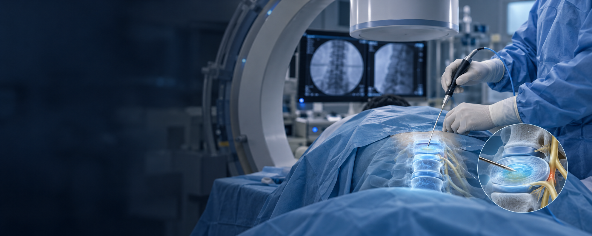
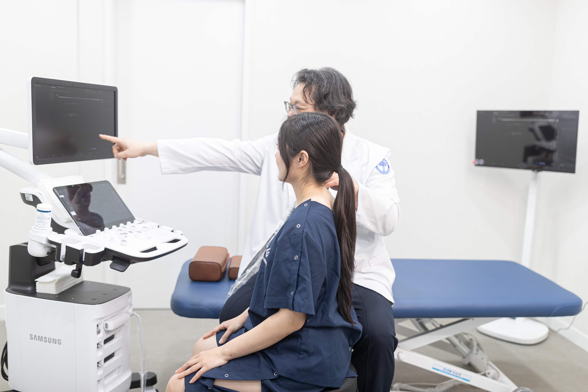

고주파 수핵 감압술이란?
디스크 안으로 가는 기구를 삽입해 고주파 에너지로 수핵의 일부를 줄이고 내부 압력을 낮추는 치료입니다.
디스크의 돌출 형태와 퇴행 정도, 신경 증상을 확인해 적용 여부를 판단하며 모든 디스크 질환에 적합한 것은 아닙니다.
디스크 내부에 가는 기구를 넣어 고주파 에너지로 수핵 일부를 줄이고
디스크 내부 압력과 신경 자극의 완화를 도모하는 시술입니다.

디스크 안으로 가는 기구를 삽입해 고주파 에너지로 수핵의 일부를 줄이고 내부 압력을 낮추는 치료입니다.
디스크의 돌출 형태와 퇴행 정도, 신경 증상을 확인해 적용 여부를 판단하며 모든 디스크 질환에 적합한 것은 아닙니다.

증상과 영상검사 결과를 함께 살펴 통증의 원인이 되는 디스크를 확인합니다.
보존적 치료 반응과 디스크 상태에 맞춰 시술 방향과 이후 관리 계획을 정합니다.
돌출 형태와 신경 압박, 디스크의 퇴행 정도를 함께 평가합니다.
영상으로 기구의 위치를 확인하며 수핵 감압의 범위와 방법을 정합니다.
통증과 감각·근력 변화를 살피고 생활 관리와 회복 단계를 안내합니다.
증상과 영상검사에서 확인되는 병변을 함께 평가합니다.
기존 치료 반응과 디스크 형태에 따라 적용성을 판단합니다.
무거운 물건 들기·과도한 허리 굽힘·비틀기를 조절하고 회복 지침을 따르세요.
통증 악화·발열·새로운 근력 저하·배뇨·배변 변화 시 신속히 진료받으세요.